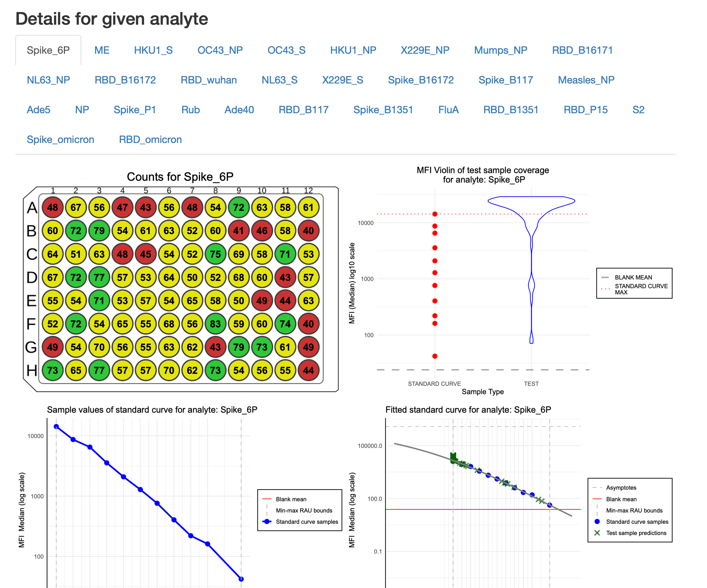

Overview of reports generated by PvSTATEM package
Mateusz Nizwantowski
2025-01-13
Source:vignettes/our_reports.Rmd
our_reports.RmdIntroduction
The PvSTATEM package provides, for now, one report that
can be generated using the generate_plate_report function.
It is an HTML report that contains a summary of the plate. It was
optimized for size so it could be sent via email. In the future, we plan
to add to the package report about Levey-Jennings plots. For now, we
will focus on the plate summary report. To present this functionality,
we use a sample dataset from the Covid OISE study, which is pre-loaded
into the package. Firstly, let us load the dataset as the
plate object.
library(PvSTATEM)
plate_filepath <- system.file("extdata", "CovidOISExPONTENT.csv", package = "PvSTATEM", mustWork = TRUE)
layout_filepath <- system.file("extdata", "CovidOISExPONTENT_layout.xlsx", package = "PvSTATEM", mustWork = TRUE)
plate <- read_luminex_data(plate_filepath, layout_filepath)#> Reading Luminex data from: /home/runner/work/_temp/Library/PvSTATEM/extdata/CovidOISExPONTENT.csv
#> using format xPONENT
#>
#> New plate object has been created with name: CovidOISExPONTENT!
#>
plate#> Plate with 96 samples and 30 analytesGenerating the report
To generate the report, we need to use the
generate_plate_report function. There is one parameter that
needs to be set, which is the plate object. Generation of
the report takes a few seconds, so please be patient. It can take up to
a minute for a large plate.
generate_plate_report(plate)Default report has 4 main sections:
- The most important information about the plate

- The layout of the plate

- The preview of standard curves

- Detailed information about analytes: this section has tabs for each analyte, where the user can select the analyte of interest.

Additional parameters
The user can customize the report by setting additional parameters.
The generate_plate_report function has the following
optional parameters:
-
additonal_notes- string with additional notes that will be added to the report
notes <- "
This is an example of additional notes that can be added to the report.
The notes support markdown syntax, for example:
**Author: Jane Doe** - bold
*Date: 2024-10-28* - italic
~~Complited~~ - strikethrough
H~2~O - subscripts
X^2^ - superscripts
[text that will be displayed](https://www.google.com) - link to resource
Ordered list:
1. First item
2. Second item
3. Third item
Unordered list:
- First item
- Second item
- Third item
> This is a blockquote
#### This is a heading
##### This is a subheading
###### This is a subsubheading
Even though headings #, ##, ### are supported, it is recommended not to use them, as the report has its own structure that is built around ### headings.
"
generate_plate_report(plate, additional_notes = notes)Such notes looks like this in the report:

-
counts_lower_threshold- the lower threshold for counts plot, works the same way as in theplot_countsfunction it is used to change the threshold between green and yellow colours -
counts_higher_threshold- the higher threshold for counts plot, works the same way as in theplot_countsfunction it is used to change the threshold between yellow and red colours -
filename- The name of the output HTML report file. If not provided or equals toNULL, the output filename will be based on the plate name, precisely:{plate_name}_report.html. By default theplate_nameis the filename of the input file that contains the plate data. For more details, please refer to the documentation about thePlateobject. If the passed filename does not contain the.htmlextension, the default extension.htmlwill be added. Filename can also be a path to a file, e.g.path/to/file.html. In this case, theoutput_dirandfilenamewill be joined together. However, if the passed filepath is an absolute path and theoutput_dirparameter is also provided, theoutput_dirparameter will be ignored. If a file already exists under a specified filepath, the function will overwrite it. -
output_dir- The directory where the output CSV file should be saved. Please note that any directory path provided will create all necessary directories (including parent directories) if they do not exist. If it equals toNULLthe current working directory will be used. Default is ‘reports’.
generate_plate_report(plate,
additional_notes = notes,
counts_lower_threshold = 10,
counts_higher_threshold = 100,
filename = "example_report.html",
output_dir = "reports_from_new_plates"
)